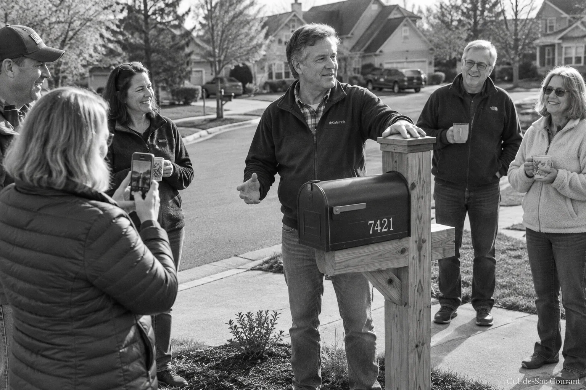

Infrastructure
Kowalski mailbox enters service before crowd of nine
The cedar post accepted its first letter at 10:15 AM Saturday, closing a six-week saga of permits, opinions, and one unsolicited second opinion. Turnout tied the record set by the 2019 driveway resealing.

BUTTERNUT COURT. The new mailbox at No. 3 entered service Saturday morning when letter carrier Diane Paulsen, informed of the occasion in advance, placed a single envelope inside it as nine residents watched. The envelope was a utility bill. "That's the job," Paulsen said, and left.
The installation ends six weeks of coverage that began July 29, when the old mailbox, a builder-grade steel unit dating to the street's construction, was found leaning at what Ted Kowalski measured as eleven degrees. The Courant's live coverage of the leaning period drew the largest single-day readership in this paper's history, a figure the Courant does not release but describes as "most of the street."
Kowalski, who milled the cedar post himself, spoke for four minutes at Saturday's gathering on the subject of proper post depth. He was interrupted once, by Larry Schmidt, who favors concrete footings. The two men have agreed to disagree, according to both wives.
The new unit is a cedar post with a powder-coated steel box, a red flag, and a small brass plate reading KOWALSKI, EST. 2026, which several attendees found excessive and all attendees photographed. Asked whether the plate implied the family itself was established in 2026, Kowalski said the plate referred to the mailbox, and asked who wanted coffee.
The fate of the old mailbox remains open. Kowalski has moved it to the garage, where sources report it is leaning against the wall at approximately eleven degrees. A reader poll on whether it should be preserved appears in this edition; results will be certified by the Courant and disputed by everyone.
The turnout of nine ties the record set by the 2019 driveway resealing at No. 8 and exceeds the seven who attended the 2024 solar eclipse viewing, an event the Courant notes was poorly promoted and shared billing with the sky.